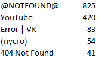

23 августа 2017
Целью этой статьи является оценка ситуации с запретом веб-сайтов в Казахстане.
Даурен Абаев Министр информации и коммуникаций
12 августа 2016
Сайты блокировались по решению суда с 2011 года, но в Казнете нет и не было официального актуального списка заблокированных сайтов. Поэтому с Марта 2016 года, сервис kazbt.com отслеживает доступность популярных веб-сайтов на территории РК и ведет свой реестр сайтов.
Во второй половине 2016 года, сайт Министерства информации и коммуникаций РК (mic.gov.kz) криво в пилотном режиме запустил реестр запрещенных интернет-ресурсов. Благодаря этому мы можем сравнить данные доступные на сайте министерства с данными из нашего сервиса. К сожалению, сайт министерства имеет неполный список заблокированных сайтов.
Стоит учесть, что после внесения изменений в закон «О связи» в 2015 году, Генеральная прокуратура и Комитет государственного контроля в области связи, информатизации и средств массовой информации могут блокировать сайты без решения суда.
На сайте того же министерства говорится, что новый Комитет связи блокирует интернет-ресурсы, распространяющие информацию, которая нарушает законодательство Республики Казахстан в том числе:
Михаил Комиссаров председатель Комитета государственного контроля в области связи
15 июня 2017
Это многое проясняет о запрещенных сайтах. Но где записи о ресурсах, заблокированных без решения суда? Почему недоступен сайт петиций change.org? Или фотохостинг flickr.com? Или многие сайты VPN решений? Почему годами не был доступен другой сайт международной петиций avaaz.org? Почему этих сайтов нет в реестре запрещенных интернет-ресурсов?
Попробуем сами себе ответить на последний вопрос. Похоже, что данные на сайте министерства неполные и охватывают период с начала 2011 года по первое полугодие 2016 года. И так как записи велись вручную, часть ссылок содержит ошибки и опечатки.
По данным на сайте, в черном списке 3572 ссылки включая 2303 уникальных домена первого уровня. Из них 16 (0.44%) ссылок находятся в зоне KZ, 526 (14.7%) в зоне RU и 1954 (54.7%) в зоне COM. Это доказывает, что в Казнете ничего нет кроме интернет-магазинов очень мало сайтов нарушающих законодательство РК.
Качество решений о блокировке сайтов улучшалось из года в год. Например, в 2011 году Сарыаркинский районный суд города Астаны заблокировал сервис статистики для сайтов liveinternet.ru и поиск Mail.Ru www.go.mail.ru (дело №2-4434/2011), а также secrets-of-healthy-weight-loss-advice.com, justinbiebervideosongs.com (дело №2-6831/2011, №2-6830/11) и так далее. В 2016 году в основном блокировались сайты онлайн казино, наркотиков и экстремизма.
После группировки запрещенных ссылок по домену первого уровня получается вот такая таблица. На первом месте расположился сайт Youtube с 15% всех запрещенных ссылок.
В следующей таблице решения о блокировке сайтов разбиты по органам государства. В основном запрещать ссылки на Youtube и сайтах социальных сетей решает Районный суд Есильского района города Астаны. Это единственный суд который заблокировал интернет архив archive.org.
Далее в таблице указано сколько решений принял каждый суд. Районный суд Есильского района и Сарыаркинский районный суд города Астаны и КСИиИ МИР РК вместе приняли 92% всех решении о блокировке сайтов. Интересно, что в Алматы никто не работает эта цифра составляет всего 6%.
За 5 лет городские суды Павлодара, Кызылорды, Уральска, Усть-Каменогорска, Бородулихинский районный суд, Жарминский районный суд и суд города Актобе вместе заблокировали 36 ссылок. В основном это ставки на спорт и сайты онлайн казино. Также Павлодарский городской суд по делу 2-13779/2013 блокирует сайт местного пивоваренного завода. А суд города Актобе по делу 2-16493 блокирует сайт продажи кастетов, средств самообороны, кодграбберов для машин, информационный портал по безопасности phreaker.us и сайт самоделок Мозгочины.
В Алматы Бостандыкский районный суд и Жетысуский районный суд не устают блокировать сайты сигарет, алкоголя и онлайн казино. Алмалинский районный суд по делу 2-2668/2014 решил заблокировать ссылку http://facebook.com/jameson.kz (единственное решение за 5 лет). А Медеуский районный суд блокирует сайты сигарет (дело 2-10768/2014), страницу журнала ADAM в Facebook (дело без номера, сейчас ссылка выдает ошибку 404) и также запрещает 22 ссылки связанные с газетой "Республика" (дело 2-8197/12) включая Facebook, Twitter, Google+, Livejournal, Youtube, Yvision.kz и Wordpress.com.
В Астане суд Есильского района по делу 2-4250/15 заблокировал 26 ссылок молодежного корпуса "Есьже я приезжий!" и "Есть же я приезжий ЩЩС" включая инструменты для мониторинга социальных медиа и веб-аналитики.
125 ссылок. Высокопродуктивный Районный суд Есильского района города Астаны делом №2-4868/14 блокирует сайты которые публиковали новость о "казахских детях" в лагере террористов. В списке оказалось 29 ссылок на Facebook, 22 ссылки на Youtube, 13 на Vk.com, 18 на Archive.org, 4 на Dailymail.co.uk, а также ссылки на Vimeo.com, Vine.co, Dailymotion.com, Azattyq.mobi, Azattyq.org и СЕРВИС КОРОТКИХ ССЫЛОК Твиттера t.co. Сейчас ссылки на Youtube, VK, Archive.org, Vimeo, Dailymotion выдают ошибку 404 (не найдено).
 Как видно на таблице справа 825 (23%) запрещенных ссылок уже не рабочие (без DNS разрешения, то есть не существуют в Интернете). Также многие другие ссылки выдают ошибку 404 или сообщения о запаркованных доменах без контента. Из ~550 ссылок на Youtube, 431 уже не работают. Из 118 ссылок на VK, 83 не работают. Одним словом, в списке много недействительных ссылок.
Все еще нет официального актуального списка запрещенных сайтов. Также неясен механизм блокировки и разблокировки сайтов.
Для блокировки сайта ресурс должен содержать запрещенный в РК материал. Тогда почему Комитет заблокировал коммерческий InDriver? Почему недоступен некоммерческий change.org? Далее сайты сервисов коротких ссылок, веб-аналитики и других инструментов были внесены в список запрещенных сайтов. Кто несет ответственность за эти ошибки? Если не обнародовать черный список для всеобщего обозрения, мы не узнаем другие ошибки Комитета.
Для разблокировки ресурса собственник сайта должен удалить противоправный материал и известить об этом Комитет. Затем Комитет выполняет проверку и делает разблокировку ресурса на территории страны. Но что делать, если сменился владелец сайта? Как покупатель домена узнает, что его сайт заблокирован в Казахстане? Кто ответственен за материальные убытки? Почему Комитет не проверяет и не обновляет (уже старый) список запрещенных ресурсов самостоятельно?
Vimeo.com был временно заблокирован на основании решения Есильского районного суда Астаны от 7 сентября 2015 года №2-3640-15 и вызвал шум в СМИ. Это дело указывает адрес запрещенного материала как https://vimeo.com, то есть весь ресурс. Есть два других старых дела, №2-3288/14 где указан адрес http://vimeo.com/103068240 и №2- 4868/14 где указан http://vimeo.com/112521601. Интересно, что в деле, после которого заблокировали сайт, не указана полная ссылка на запрещенный материал.
По данным kazbt.com, на первом месте заблокированных сайтов по рангу находится Tumblr.com, который запрещен тем же судом. В деле №2-341/15 указан адрес http://dawla-news.tumblr.com (блога уже нет), в деле №2-2681/15 указан https://abusaddam.tumblr.com (блог без контента) и в деле №2-4438/15 сам http://tumblr.com. Почему Tumblr все еще не разблокирован если на ресурсе больше нет запрещенного материала (как Vimeo)?